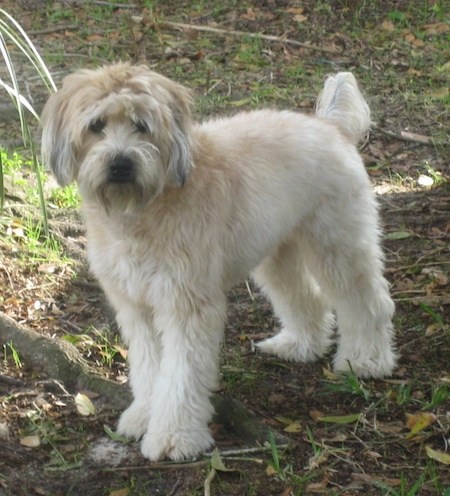

About Me
Hi, I am Parth Kasmalkar. I currently go to Valley Christian Junior High School, where I take the Intro to Programming elective. I like playing and listening to music. I play the flute and an Indian instrument known as the Tabla. Je suis moody and terrible overall.
I also have a dog. He is the best dog and the worst dog at the same time. He is a Soft-Coated Wheaten Terrier, so he has to be soft or else he has failed his family. The dog below is not mine.
Follow me on
Quora: Parth Kasmalkar
GitHub: windogedeveloper